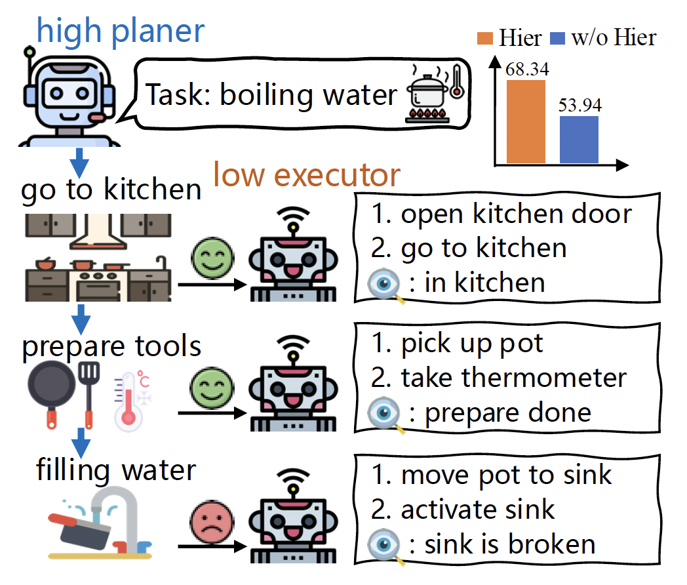
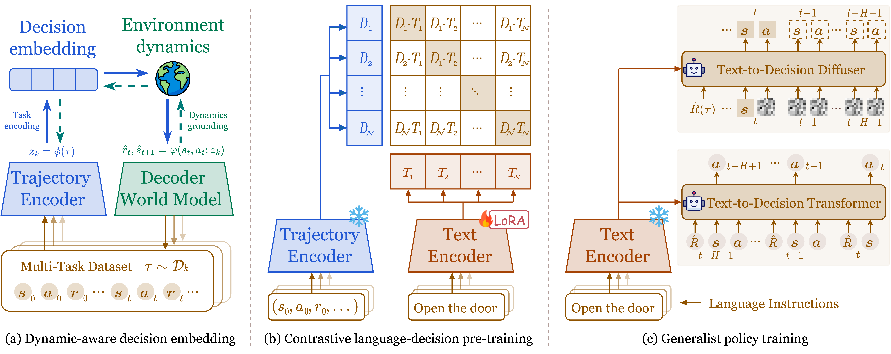
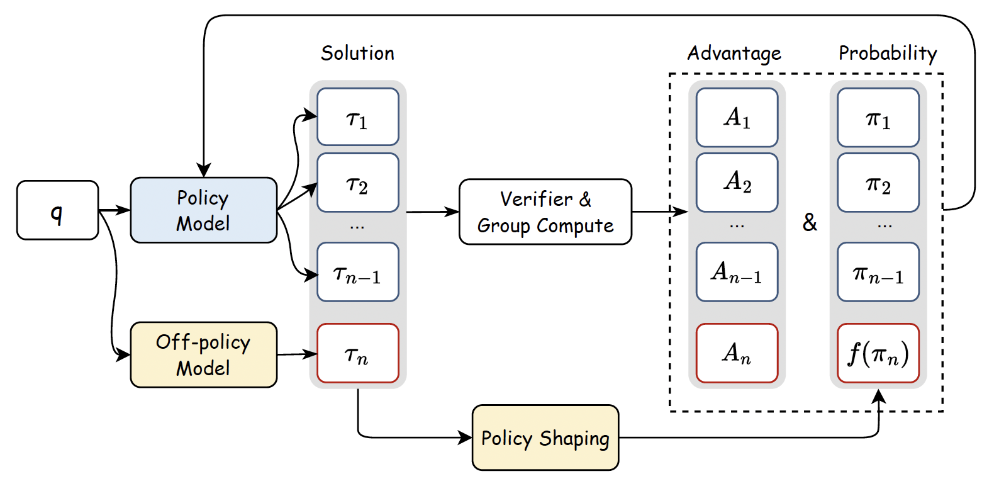
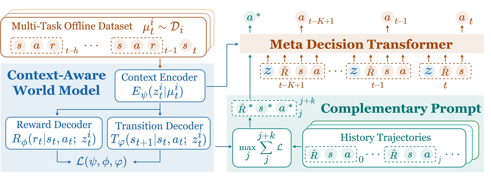
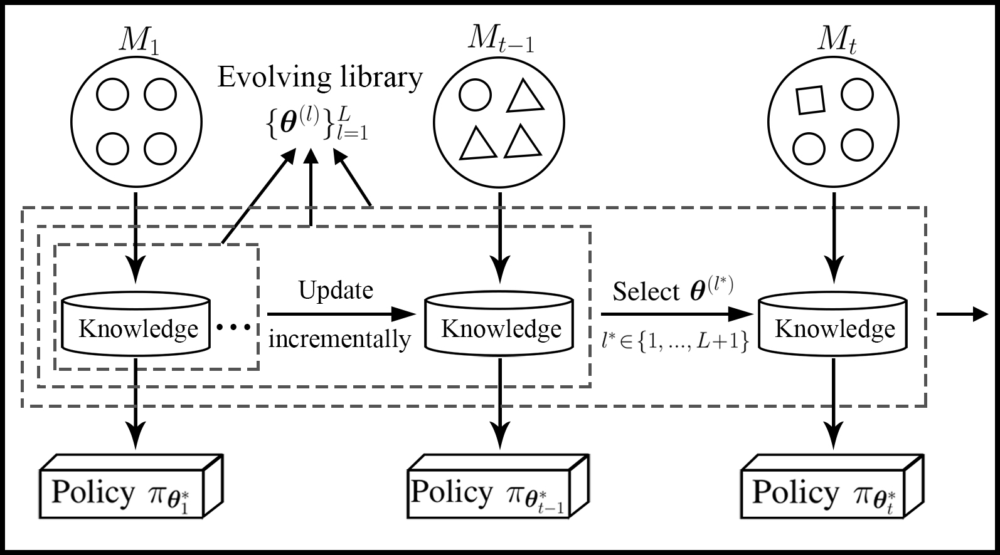
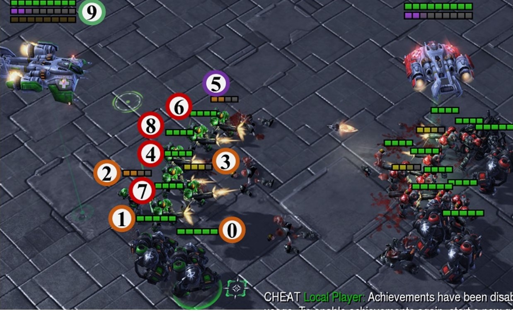
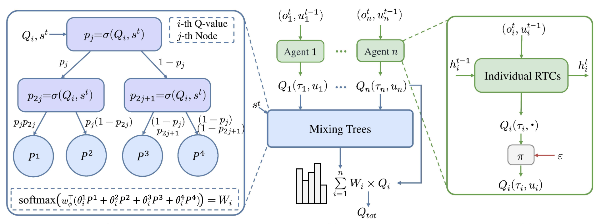
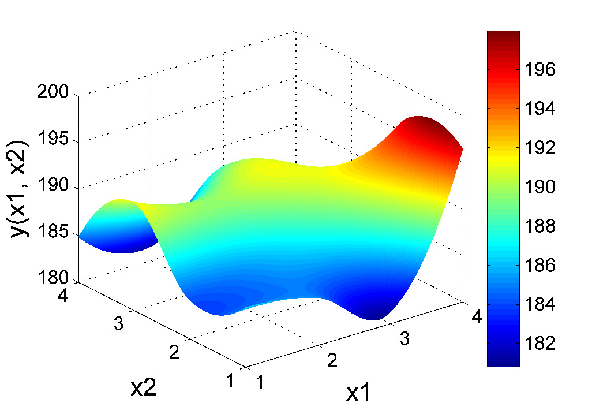
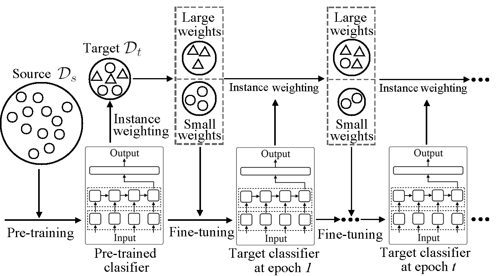

|
Zhi Wang I'm an Associate Professor at Nanjing University in Nanjing, China. I received the Ph.D. degree from City University of Hong Kong and the bachelor's degree from Nanjing University. I was a visiting scholar at University of New South Wales and Institute of Automation, Chinese Academy of Sciences. Email / Google Scholar / Github / Publication |

|
ResearchI'm interested in reinfocement learning algorithms and applications. Specifically, I work on how learning algorithms can scale RL agents to i) dynamic environments, ii) offline settings, and iii) multi-agent systems, allowing them to autonomously adapt to i) non-stationary task distributions, ii) non-interactive scenarios, and iii) cooperative or competitive task assignments, facilitating RL's deployment in real-world domains. Recently, I work on leveraging foundation models in decision-making problems, exploring ideas of language agents, RL for LLM reasoning, in-context RL, and embodied intelligence. |
Language Agents, RL for LLM Reasoning |
|

|
Divide and Conquer: Grounding LLMs as Efficient Decision-Making Agents via Offline Hierarchical Reinforcement Learning
Zican Hu, Wei Liu, Xiaoye Qu, Xiangyu Yue, Chunlin Chen, Zhi Wang*, Yu Cheng International Conference on Machine Learning (ICML), 2025 paper / code we propose an innovative framework GLIDER (Grounding Language Models as EffIcient Decision-Making Agents via Offline HiErarchical RL) that introduces a parameter-efficient and generally applicable hierarchy to train competent LLM policies for complex interactive tasks. |
|

|
Text-to-Decision Agent: Learning Generalist Policies from Natural Language Supervision
Shilin Zhang, Zican Hu, Wenhao Wu, Xinyi Xie, Jianxiang Tang, Chunlin Chen, Daoyi Dong, Yu Cheng, Zhenhong Sun, Zhi Wang* arXiv preprint, arXiv:2504.15046, 2025 paper we propose Text-to-Decision Agent (T2DA), a simple and scalable pre-training framework for learning generalist policies via aligning language knowledge with environment dynamics of decision tasks. |
|

|
Learning to Reason under Off-Policy Guidance
Jianhao Yan, Yafu Li, Zican Hu, Zhi Wang, Ganqu Cui, Xiaoye Qu, Yu Cheng, Yue Zhang arXiv preprint, arXiv:2504.14945, 2025 code / paper We introduce LUFFY (Learning to reason Under oFF-policY guidance), a framework that augments zero-RL with off-policy reasoning traces, balancing imitation and exploration by combining off-policy demonstrations with on-policy rollouts during training. |
Generalization in RL |
|

|
Meta-DT: Offline Meta-RL as Conditional Sequence Modeling with World Model Disentanglement
Zhi Wang, Li Zhang, Wenhao Wu, Yuanheng Zhu, Dongbin Zhao, Chunlin Chen Advances in Neural Information Processing Systems (NeurIPS), 2024 code / paper We leverage the sequential modeling ability of the transformer architecture and robust task representation learning via world model disentanglement to achieve efficient generalization in offline meta-RL. |
|

|
Lifelong Incremental Reinforcement Learning with Online Bayesian Inference
Zhi Wang, Chunlin Chen, Daoyi Dong IEEE Transactions on Neural Networks and Learning Systems (TNNLS), 2022 code / paper We develop a lifelong RL agent that can incrementally adapt its behaviors to dynamic environments, via maintaining an ever-expanding policy library with online Bayesian inference. |
Multi-Agent RL |
|

|
Attention-Guided Contrastive Role Representations for Multi-Agent Reinforcement Learning
Zican Hu, Zongzhang Zhang, Huaxiong Li, Chunlin Chen, Hongyu Ding, Zhi Wang* International Conference on Learning Representations (ICLR), 2024 code / paper Our main insight is to learn a compact role representation that can capture complex behavior patterns of agents, and use that role representation to promote behavior heterogeneity, knowledge transfer, and skillful coordination across agents. |
|

|
MIXRTs: Toward Interpretable Multi-Agent Reinforcement Learning Via Mixing Recurrent Soft Decision Trees
Zichuan Liu, Yuanyang Zhu, Zhi Wang*, Yang Gao, Chunlin Chen IEEE Transactions on Pattern Analysis and Machine Intelligence (TPAMI), 2025 paper We propose a novel architecture based on differentiable soft decision trees to tackle the tension between model interpretability and learning performance in MARL domains, paving the way for interpretable and high-performing MARL systems. |
RL Applications and Others |
|

|
Reinforcement Learning-Based Optimal Sensor Placement for Spatiotemporal Modeling
Zhi Wang, Han-Xiong Li, Chunlin Chen IEEE Transactions on Cybernetics (TCYB), 2020 paper For the first time, we introduce an RL-based method to tackle the optimal sensor placement problem for modeling distributed parameter systems. |
|

|
Better Fine-Tuning via Instance Weighting for Text Classification
Zhi Wang, Wei Bi, Yan Wang, Xiaojiang Liu AAAI Conference on Artificial Intelligence (AAAI), 2019 paper / supp we propose an Instance Weighting based Fine-tuning (IW-Fit) method, which revises the fine-tuning stage to improve the classification accuracy on the target domain when a pre-trained model from the source domain is given. |
Miscellanea |
Teaching |
<Deep Reinforcement Learning>, for postgraduates
<Digital Circuits>, for undergraduates |
Academic Service |
Associate Editor, Special Sessions, IEEE SMC 2023/2022/2021, IEEE ICNSC 2020
Reviewer: ICML/NeurIPS/ICLR/CVPR/AAAI/ECAI, IEEE TPAMI/TNNLS/TCYB/TSYS/TMECH/JAS |
|
|